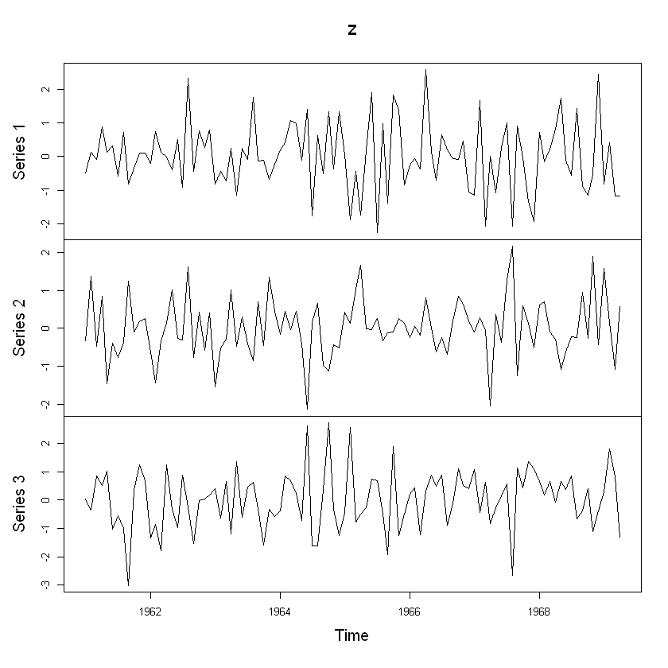
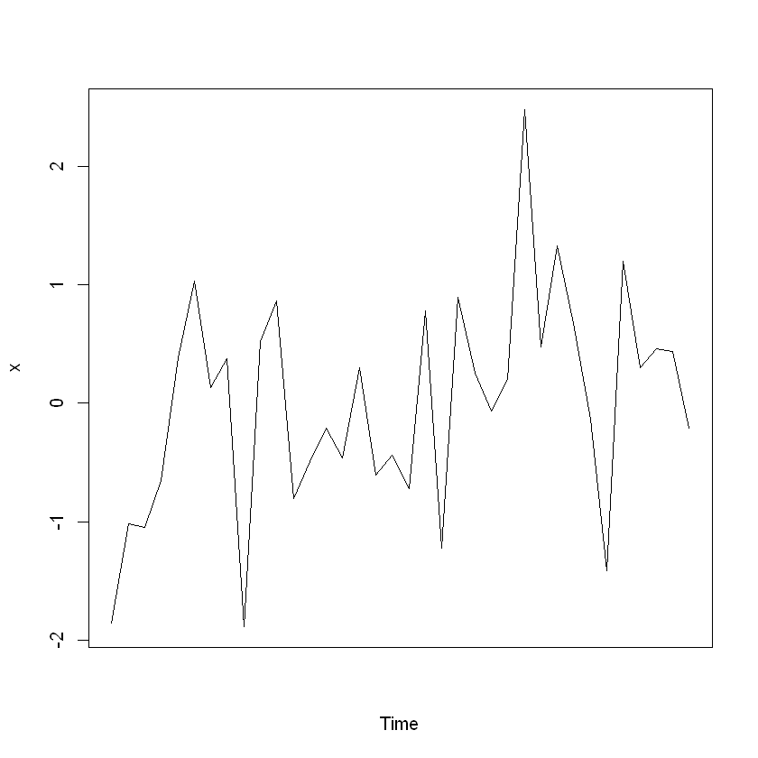

R 언어 기본 공부 2
# 테이블 객체 생성
table(rpois(35,5)) #rpois => 포아송 분포 (Poisson Distribution)
2 3 4 5 6 7 8
6 2 9 5 9 3 1
table(rbinom(100,10,0.5))
2 3 4 5 6 7 8 10
5 10 23 20 22 11 8 1
#ftable () 함수: 다양한 객체(요인,리스트,데이터프레임,분할표 작성)
ftable(Titanic,row.vars=1:3)
Survived No Yes
Class Sex Age
1st Male Child 0 5
Adult 118 57
Female Child 0 1
Adult 4 140
2nd Male Child 0 11
Adult 154 14
Female Child 0 13
Adult 13 80
3rd Male Child 35 13
Adult 387 75
Female Child 17 14
Adult 89 76
Crew Male Child 0 0
Adult 670 192
Female Child 0 0
Adult 3 20
ftable(Titanic, row.vars=1:2)
Age Child Adult
Survived No Yes No Yes
Class Sex
1st Male 0 5 118 57
Female 0 1 4 140
2nd Male 0 11 154 14
Female 0 13 13 80
3rd Male 35 13 387 75
Female 17 14 89 76
Crew Male 0 0 670 192
Female 0 0 3 20
a =c('k','l','p','le','pa')
b =c('c','d','w','le','pa')
c =c('k','l','p','le','pa')
df = data.frame(name=a,gender=b,blood=c)
df
| name | gender | blood |
|---|---|---|
| k | c | k |
| l | d | l |
| p | w | p |
| le | le | le |
| pa | pa | pa |
table(df$name)
k l le p pa
1 1 1 1 1
table(df$blood)
k l le p pa
1 1 1 1 1
# 시계열 객체 생성 : ts() 함수를 이용
(t <- ts(1:10, frequency=4, start=c(2001,2)))
ERROR while rich displaying an object: Error in repr_matrix_generic(obj, "\n%s%s\n", sprintf("|%%s\n|%s|\n", : formal argument "cols" matched by multiple actual arguments
Traceback:
1. FUN(X[[i]], ...)
2. tryCatch(withCallingHandlers({
. if (!mime %in% names(repr::mime2repr))
. stop("No repr_* for mimetype ", mime, " in repr::mime2repr")
. rpr <- repr::mime2repr[[mime]](obj)
. if (is.null(rpr))
. return(NULL)
. prepare_content(is.raw(rpr), rpr)
. }, error = error_handler), error = outer_handler)
3. tryCatchList(expr, classes, parentenv, handlers)
4. tryCatchOne(expr, names, parentenv, handlers[[1L]])
5. doTryCatch(return(expr), name, parentenv, handler)
6. withCallingHandlers({
. if (!mime %in% names(repr::mime2repr))
. stop("No repr_* for mimetype ", mime, " in repr::mime2repr")
. rpr <- repr::mime2repr[[mime]](obj)
. if (is.null(rpr))
. return(NULL)
. prepare_content(is.raw(rpr), rpr)
. }, error = error_handler)
7. repr::mime2repr[[mime]](obj)
8. repr_markdown.ts(obj)
9. repr_ts_generic(obj, repr_markdown.matrix, ...)
10. repr_func(m, ..., rows = nrow(m), cols = ncol(m))
| Qtr1 | Qtr2 | Qtr3 | Qtr4 | |
|---|---|---|---|---|
| 2001 | 1 | 2 | 3 | |
| 2002 | 4 | 5 | 6 | 7 |
| 2003 | 8 | 9 | 10 |
str(t)
Time-Series [1:10] from 2002 to 2005: 1 2 3 4 5 6 7 8 9 10
set.seed(100)
z <- ts(matrix(rnorm(300),100,3), start=c(1961,1), frequency=12)
class(z)
<ol class=list-inline> <li>‘mts’</li> <li>‘ts’</li> <li>‘matrix’</li> </ol>
head(z)
| Series 1 | Series 2 | Series 3 |
|---|---|---|
| -0.50219235 | -0.3329234 | 0.02817177 |
| 0.13153117 | 1.3631137 | -0.35670341 |
| -0.07891709 | -0.4691473 | 0.85262638 |
| 0.88678481 | 0.8428756 | 0.51336525 |
| 0.11697127 | -1.4579937 | 1.01820300 |
| 0.31863009 | -0.4003059 | -1.02147908 |
plot(z)

# yearly time series : 2001년 부터 36년 간의 자료를 시계열 객체로 만들고 plot을 그린다
x <- ts(rnorm(36),start=c(2001))
print(x)
Time Series:
Start = 2001
End = 2036
Frequency = 1
[1] -1.85544523 -1.01856471 -1.04511109 -0.65128765 0.38268265 1.03189971
[7] 0.13107497 0.37719173 -1.88769508 0.52021940 0.85915316 -0.80248866
[13] -0.49196052 -0.21095432 -0.46367661 0.29947957 -0.60547383 -0.43901213
[19] -0.72075363 0.78080503 -1.22228428 0.89119404 0.25392284 -0.06581643
[25] 0.20146603 2.47770051 0.47175279 1.32619808 0.66859849 -0.13739441
[31] -1.41117170 1.20036310 0.29909011 0.45622688 0.43807844 -0.21502114
plot(x, xaxt="n")

tsp = attributes(x)$tsp
dates = seq(as.Date("2001-01-01"),by="year",along=x)
axis(1,at = seq(tsp[1],tsp[2],along=x), labels =format(dates, "%Y"))
Error in axis(1, at = seq(tsp[1], tsp[2], along = x), labels = format(dates, : plot.new has not been called yet
Traceback:
1. axis(1, at = seq(tsp[1], tsp[2], along = x), labels = format(dates,
. "%Y"))
x <- ftable(mtcars[c("cyl","vs","am", "gear")])
x
gear 3 4 5
cyl vs am
4 0 0 0 0 0
1 0 0 1
1 0 1 2 0
1 0 6 1
6 0 0 0 0 0
1 0 2 1
1 0 2 2 0
1 0 0 0
8 0 0 12 0 0
1 0 0 2
1 0 0 0 0
1 0 0 0
x <- table(mtcars[c("cyl","vs","am","gear")])
x
, , am = 0, gear = 3
vs
cyl 0 1
4 0 1
6 0 2
8 12 0
, , am = 1, gear = 3
vs
cyl 0 1
4 0 0
6 0 0
8 0 0
, , am = 0, gear = 4
vs
cyl 0 1
4 0 2
6 0 2
8 0 0
, , am = 1, gear = 4
vs
cyl 0 1
4 0 6
6 2 0
8 0 0
, , am = 0, gear = 5
vs
cyl 0 1
4 0 0
6 0 0
8 0 0
, , am = 1, gear = 5
vs
cyl 0 1
4 1 1
6 1 0
8 2 0
ftable(x, row.vars=c(2,4))
cyl 4 6 8
am 0 1 0 1 0 1
vs gear
0 3 0 0 0 0 12 0
4 0 0 0 2 0 0
5 0 1 0 1 0 2
1 3 1 0 2 0 0 0
4 2 6 2 0 0 0
5 0 1 0 0 0 0
# 객체 다루기
a <- matrix(c(1:10),2,5)
a
| 1 | 3 | 5 | 7 | 9 |
| 2 | 4 | 6 | 8 | 10 |
is.data.frame(a)
FALSE
is.matrix(a)
TRUE
a %*% t(a) # %*% 행렬 객체에 적용되는 연산자임
| 165 | 190 |
| 190 | 220 |
b <- as.data.frame(a)
str(b)
'data.frame': 2 obs. of 5 variables:
$ V1: int 1 2
$ V2: int 3 4
$ V3: int 5 6
$ V4: int 7 8
$ V5: int 9 10
b %*% t(b)
Error in b %*% t(b): 수치 또는 복소수형태의 행렬 혹은 벡터 인자가 요구됩니다
Traceback:
as.matrix(b) %*% t(as.matrix(b))
| 165 | 190 |
| 190 | 220 |